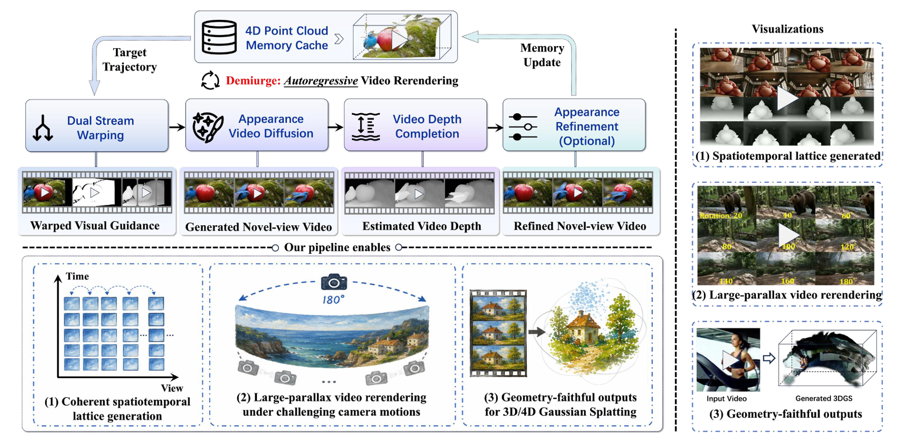

Demiurge: Forging Navigable 4D Worlds via Autoregressive Video Rerendering
Autoregressive video rerendering with a shared 4D memory for coherent, navigable world construction.
Explore Generated Worlds
Browse representative trajectories. Videos load efficiently and pause when they leave the viewport.
Abstract
Recent advancements in video diffusion models have substantially empowered generative video rerendering, where novel-view videos can be synthesized from a single input video, facilitating a broad spectrum of applications such as world modeling, embodied intelligence, and robotic simulation. However, despite their impressive photorealism, existing video rerendering methods typically treat each camera trajectory in isolation, lacking the cross-trajectory consistency required to form a coherent and traversable 4D world. To address this limitation, we introduce Demiurge, a novel autoregressive video rerendering pipeline for navigable 4D world generation.
Built upon a dynamic 4D point-cloud memory cache, Demiurge promotes cross-trajectory consistency through four key components: 1) an appearance video diffusion model that rerenders photorealistic novel-view videos along target camera trajectories conditioned on the 4D cache; 2) a cache-consistent video depth completion model that aligns known-region depths with cached geometry while completing missing regions, mitigating scale ambiguity and discontinuities during cache updates; 3) a memory-aware dual-stream warping strategy that provides high-fidelity visual guidance and occlusion cues for plausible novel-view video synthesis; 4) a geometry-aware video refinement model that further enhances the perceptual quality of synthesized videos.
Extensive experiments show that Demiurge achieves state-of-the-art performance with three key capabilities: 1) coherent spatiotemporal lattice construction over dense multi-view trajectories; 2) large-parallax video rerendering under challenging camera motions, such as 180° rotations with no input-view overlap; 3) geometry-faithful outputs that can be directly optimized into high-quality 3D Gaussian Splatting representations with minimal artifacts.
Method

State-of-the-Art Comparisons
Compare the input, prior work, and our rerendered output side by side. Use the group controls to inspect each case in sync.
Key Capabilities
Coherent Spatiotemporal Lattice Generation
Large-Parallax Video Rerendering
Case 1
Case 2
Geometry-Faithful Outputs for 3DGS Reconstruction
Case 1
Case 2
Ablation Studies
Inspect how each component contributes to visual quality, consistency, and geometric fidelity.